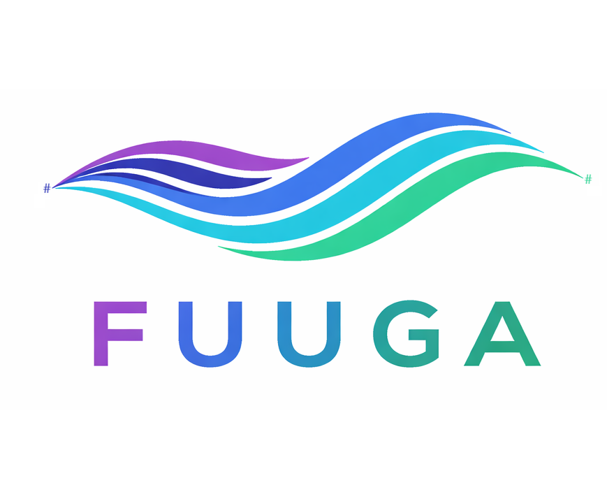

Confidential · hietanen.co.uk · nuget.org/packages/Fuuga
Hietanen Consultancy · Investor briefing · September 2026

Train, fine-tune, compress and serve your own language models on .NET — no Python, and no data leaving the building.